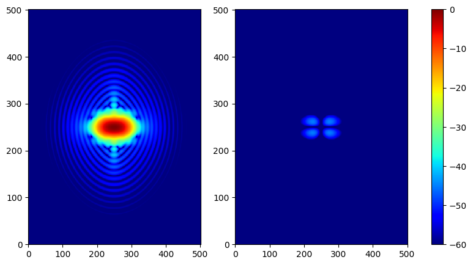
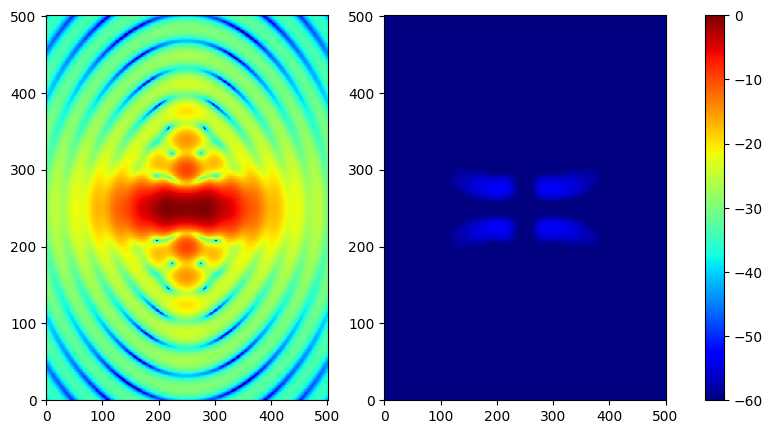
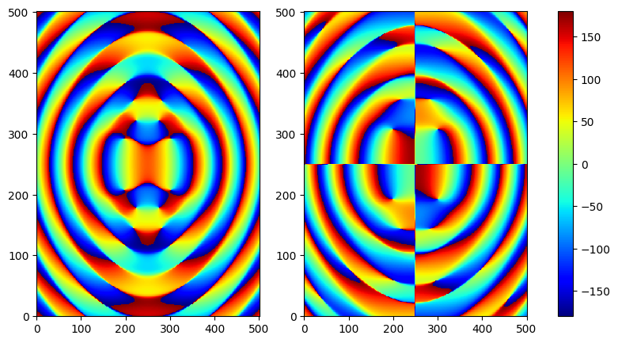

Two Biconic Silicon Lenses
import numpy as np
import matplotlib.pyplot as plt
import sys
sys.path.append("../src")
# Geometry objectors
from hypo.lenspy import simple_Lens
from hypo.surface import BiconicSurface,ConicSurface
from hypo.coordinate import coord_sys
# source objector
from hypo.Feedpy import GaussiBeam
# output objector
from hypo.field_storage import Spherical_grd, plane_grd, save_grd
from hypo.coxvec import Ludwig_Cox_vector as CO
from hypo.vecops import Vector, dot
outputdatafolder = 'Data/biconic3/'
'''1. Define coordinate system'''
coord_ref = coord_sys()
coord_feed = coord_sys(ref_coord = coord_ref)
coord_Lens1 = coord_sys(origin = [0,0,100], ref_coord= coord_ref)
coord_Lens2 = coord_sys(origin = [0,0,363], ref_coord= coord_ref)
coord_out = coord_sys(origin = [0,0,531.5], ref_coord =coord_ref)
'''2. Define lens two surfaces'''
r1_x = 306.8 # mm
r1_y = 236
k1_x = -11.2896
k1_y = -11.2896
Lens1_face1 = BiconicSurface(r1_x, r1_y, conic_const_x=k1_x, conic_const_y=k1_y)
r1_2 = np.inf
Lens1_face2 = ConicSurface(r1_2)
r2_2 = np.inf
Lens2_face1 = ConicSurface(r2_2)
r2_x = 306.8 # mm
r2_y = 377.6
k2_x = -11.2896
k2_y = -11.2896
Lens2_face2 = BiconicSurface(r2_x, r2_y, conic_const_x=k2_x, conic_const_y=k2_y)
'''3. Define Simple Lens'''
# refractive index
SILICON = 3.36
# thickness
t1 = 6 #mm
t2 = 6
# diameter
D = 100# mm
Lens1 = simple_Lens(SILICON,
t1,
D,
Lens1_face1,
Lens1_face2,
coord_Lens1,
name = 'Lens1',
AR_file = None,
outputfolder = outputdatafolder)
Lens2 = simple_Lens(SILICON,
t2,
D,
Lens2_face1,
Lens2_face2,
coord_Lens2,
name = 'Lens2',
AR_file = None,
outputfolder = outputdatafolder)
'''4. Source: an idea Gaussian beam'''
Edge_taper = -5.8837209 #dB
Edge_angle = 12 # degree
freq = 150
Feed = GaussiBeam(Edge_taper, Edge_angle, freq, coord_feed,polarization='x')
'''5. Define the fields wanted to calculated'''
Beammap = Spherical_grd(coord_ref,
0,0,0.8,0.8,
501,501,
Type = 'uv',
far_near = 'far' )
OutputBeam = plane_grd(coord_out,
0,0,50,50,
501,501)
''' Start PO anlaysis'''
Lens1.PO_analysis(Feed,
[1000,1000],
[1000,1000],
freq)
None 150GHz
Batch size: 5
Batch size: 5
100%|██████████| 128063/128063 [23:00<00:00, 92.74it/s]
Lens2.PO_analysis(Lens1,
[1000,1000],
[1000,1000],
freq)
Batch size: 5
Batch size: 5
100%|██████████| 128063/128063 [23:00<00:00, 92.75it/s]
None 150GHz
Batch size: 5
Batch size: 5
100%|██████████| 128063/128063 [23:00<00:00, 92.77it/s]
Lens1.source(Beammap , freq, far_near = 'far')
save_grd(Beammap, outputdatafolder+'centerbeam.h5')
Batch size: 5
100%|██████████| 50200/50200 [04:18<00:00, 194.28it/s]
#Lens2.surf_cur_file = outputdatafolder + 'Lens2_cur.h5'
Lens2.source(OutputBeam , freq, far_near = 'near')
save_grd(OutputBeam, outputdatafolder+'outputBW_beam.h5')
Batch size: 5
Batch size: 5
100%|██████████| 50200/50200 [09:00<00:00, 92.86it/s]
fig, ax = plt.subplots(1, 2, figsize = (10,5))
Max = np.abs(Beammap.E.x).max()
vmin = -60
p0 = ax[0].pcolor(np.log10(np.abs(Beammap.E.x.reshape(501,-1))/Max)*20,cmap = 'jet',vmax= 0, vmin = vmin)
p1 = ax[1].pcolor(np.log10(np.abs(Beammap.E.y.reshape(501,-1))/Max)*20,cmap = 'jet',vmax= 0, vmin = vmin)
cbar = fig.colorbar(p0,ax = ax.ravel())

fig, ax = plt.subplots(1, 2, figsize = (10,5))
Max = np.abs(OutputBeam.E.x).max()
vmin = -60
p0 = ax[0].pcolor(np.log10(np.abs(OutputBeam.E.x.reshape(501,-1))/Max)*20,cmap = 'jet',vmax= 0, vmin = vmin)
p1 = ax[1].pcolor(np.log10(np.abs(OutputBeam.E.y.reshape(501,-1))/Max)*20,cmap = 'jet',vmax= 0, vmin = vmin)
cbar = fig.colorbar(p0,ax = ax.ravel())

fig, ax = plt.subplots(1, 2, figsize = (10,5))
Max = np.abs(OutputBeam.E.x).max()
p0 = ax[0].pcolor(np.angle(OutputBeam.E.x.reshape(501,-1))*180/np.pi,cmap = 'jet',vmax= 180, vmin = -180)
p1 = ax[1].pcolor(np.angle(OutputBeam.E.y.reshape(501,-1))*180/np.pi,cmap = 'jet',vmax= 180, vmin = -180)
cbar = fig.colorbar(p0,ax = ax.ravel())
